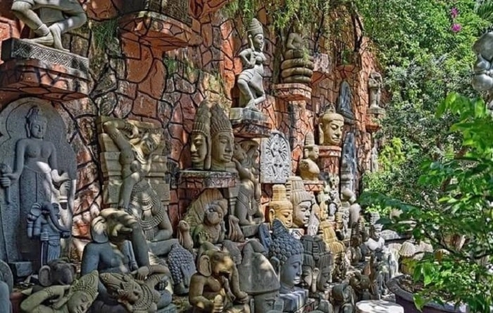
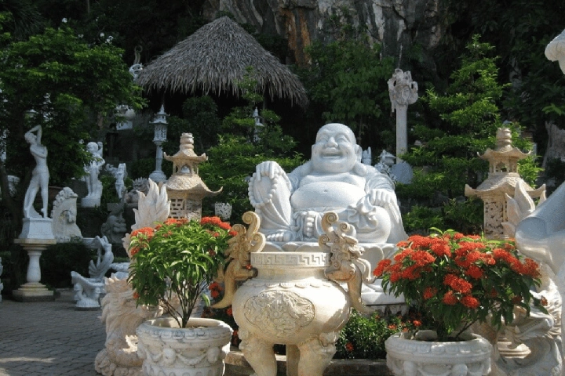
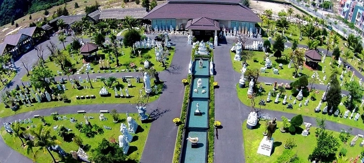
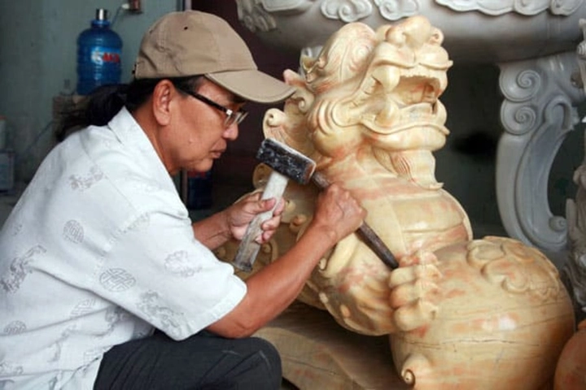

Khám phá làng nghề chạm khắc đá Non Nước ở Đà Nẵng hơn 400 năm tuổi
Làng nghề chạm khắc đá Non Nước, nằm dưới chân núi Ngũ Hành Sơn, Đà Nẵng, là một trong những làng nghề truyền thống nổi bật của miền Trung Việt Nam. Với lịch sử hàng trăm năm, làng nghề này không chỉ tạo ra những tác phẩm điêu khắc tinh xảo mà còn lưu giữ kỹ thuật chế tác đá truyền thống độc đáo. Từ tượng Phật, phù điêu đến các sản phẩm trang trí nội thất, đá Non Nước luôn mang đến sự kết hợp hài hòa giữa nghệ thuật và thủ công tinh tế, thu hút du khách và nhà sưu tập trong nước lẫn quốc tế.
1. Lịch sử hình thành làng nghề
Làng nghề chạm khắc đá Non Nước bắt nguồn từ khoảng thế kỷ 17–18, gắn liền với nhu cầu xây dựng chùa chiền, đền đài và các công trình kiến trúc quan trọng của triều đình và nhân dân. Vào thời điểm này, đá cẩm thạch được khai thác trực tiếp từ các mỏ đá tự nhiên ở chân núi, với đặc tính cứng, bền nhưng vẫn dễ chế tác. Các nghệ nhân đầu tiên đã bắt đầu thử nghiệm việc cắt, đục và điêu khắc để tạo ra những tượng Phật, phù điêu và các chi tiết trang trí phục vụ nhu cầu tôn giáo và cung đình.
Qua thời gian, kỹ thuật chế tác đá ở Non Nước được hoàn thiện, trở thành một nghề thủ công truyền thống có hệ thống. Những nghệ nhân đầu tiên không chỉ truyền nghề cho con cháu trong gia đình mà còn hình thành các nhóm, làng xã chuyên nghiệp, phát triển một cộng đồng làm nghề quy mô hơn. Chính nhờ truyền thống gắn kết này, làng nghề nhanh chóng nổi tiếng khắp miền Trung, và dần trở thành một biểu tượng nghệ thuật đá của Việt Nam.

Trong suốt quá trình phát triển, làng nghề đã trải qua nhiều giai đoạn thăng trầm: từ phục vụ nhu cầu tôn giáo, cung đình, đến mở rộng ra sản xuất tượng, vật dụng trang trí nội thất và quà lưu niệm. Các tác phẩm đá Non Nước không chỉ được sử dụng trong nước mà còn được xuất khẩu ra nước ngoài, góp phần nâng cao uy tín của nghề điêu khắc đá Việt Nam trên trường quốc tế.
Ngày nay, làng nghề Non Nước vẫn giữ nguyên bản sắc truyền thống, kết hợp giữa kỹ thuật cổ xưa và những cải tiến hiện đại, trở thành điểm đến hấp dẫn cho du khách, nhà nghiên cứu văn hóa và những người yêu nghệ thuật đá. Đây không chỉ là nơi chế tác, mà còn là kho tàng di sản văn hóa sống, lưu giữ tinh hoa nghệ thuật điêu khắc Việt Nam qua nhiều thế hệ.
2. Nguyên liệu đá đặc trưng
Nguyên liệu chính của làng nghề Non Nước là đá cẩm thạch, được khai thác trực tiếp từ các mỏ đá quanh chân núi Ngũ Hành Sơn. Loại đá này nổi bật với nhiều ưu điểm: độ bền cao, khả năng chịu thời tiết tốt, màu sắc tự nhiên đa dạng từ trắng, xám, vàng nhạt đến xanh nhạt, và bề mặt mịn dễ chế tác. Mỗi tảng đá có những vân màu độc đáo, tạo nên nét riêng biệt cho từng tác phẩm.
Bên cạnh đá cẩm thạch, các nghệ nhân còn sử dụng một số loại đá granite hoặc đá bazan cho các công trình cần độ bền cực cao. Việc lựa chọn nguyên liệu không chỉ dựa vào tính chất vật lý mà còn phụ thuộc vào ý tưởng nghệ thuật và phong thủy của khách hàng. Sự kết hợp giữa chất liệu tự nhiên và bàn tay điêu luyện của nghệ nhân đã tạo ra những tác phẩm vừa bền chắc, vừa mang giá trị thẩm mỹ cao.
Nguyên liệu đá ở Non Nước không chỉ phục vụ các tượng Phật, phù điêu, mà còn được sử dụng cho bàn ghế đá, cột trụ, mộ đá, các vật trang trí trong chùa, đình và cả quà lưu niệm. Chính sự đa dạng về nguyên liệu đã giúp làng nghề phát triển các sản phẩm phục vụ nhiều mục đích khác nhau, từ tôn giáo, kiến trúc đến trang trí và kinh doanh.
3. Kỹ thuật điêu khắc truyền thống
Kỹ thuật điêu khắc đá ở Non Nước là sự kết hợp giữa truyền thống và kỹ năng thủ công tinh xảo được truyền lại qua nhiều thế hệ. Từ việc chọn đá, cắt tảng, tạo hình thô đến việc chạm khắc chi tiết, mọi bước đều đòi hỏi sự tỉ mỉ và kiên nhẫn. Các nghệ nhân sử dụng nhiều loại dụng cụ truyền thống như búa, đục, dùi, cưa tay và các công cụ mài, đánh bóng để tạo hình và hoàn thiện tác phẩm.
Ngoài các kỹ thuật cơ bản, nghệ nhân Non Nước còn phát triển những phương pháp riêng biệt để khắc nổi, khắc chìm, điêu khắc phù điêu và tạo hoa văn phức tạp. Một trong những bí quyết đặc trưng là khả năng “đọc vân đá” — tức là nhận biết đường vân, màu sắc và kết cấu tự nhiên của đá để khai thác tối đa vẻ đẹp và hạn chế nứt vỡ.

Kỹ thuật điêu khắc ở đây không chỉ phục vụ mục đích thẩm mỹ mà còn tôn trọng tính phong thủy và ý nghĩa tâm linh. Ví dụ, các bức tượng Phật hay linh vật đều được chế tác theo đúng tỷ lệ chuẩn, gợi cảm giác trang nghiêm và hài hòa. Sự kết hợp giữa kỹ thuật điêu luyện và con mắt thẩm mỹ tinh tế đã biến Non Nước trở thành trung tâm điêu khắc đá nổi tiếng bậc nhất Việt Nam.
4. Các sản phẩm tiêu biểu
Làng nghề Non Nước nổi bật với đa dạng sản phẩm từ tượng Phật, tượng thần, linh vật, phù điêu, bàn ghế đá, cột trụ, đèn đá, mộ đá đến các vật phẩm trang trí và quà lưu niệm. Mỗi tác phẩm đều thể hiện sự tinh tế trong chế tác, với từng chi tiết nhỏ được điêu khắc tỉ mỉ, bề mặt mịn màng, và hoa văn sống động.
Ngoài các sản phẩm phục vụ kiến trúc, làng nghề còn phát triển những sản phẩm nhỏ gọn để du khách và nhà sưu tập dễ dàng mang về. Các tượng mini, tranh đá khắc nổi hay các vật trang trí phong thủy là những mặt hàng được ưa chuộng nhờ vẻ đẹp tự nhiên và tính nghệ thuật cao.
Các sản phẩm đá Non Nước không chỉ nổi tiếng trong nước mà còn được xuất khẩu sang nhiều quốc gia, góp phần quảng bá văn hóa Việt Nam ra thế giới. Đồng thời, những tác phẩm này còn mang giá trị giáo dục, văn hóa và tâm linh, thể hiện tinh hoa nghề truyền thống và sự sáng tạo không ngừng của các thế hệ nghệ nhân.
5. Nghệ nhân và truyền nghề
Làng nghề Non Nước nổi tiếng nhờ các nghệ nhân lành nghề, những người đã trải qua quá trình học hỏi, rèn luyện nhiều năm, thậm chí cả đời để thành thạo các kỹ thuật chạm khắc phức tạp. Truyền thống “truyền nghề theo dòng họ” là phương thức chính, khi kiến thức, kỹ thuật và bí quyết được cha truyền con nối, giữ gìn qua nhiều thế hệ.
Nghệ nhân ở Non Nước không chỉ là thợ thủ công, mà còn là người nghệ sĩ, biết cách kết hợp giữa kỹ thuật và thẩm mỹ. Họ am hiểu về tỉ lệ, ánh sáng, màu sắc và kết cấu đá, từ đó tạo ra những tác phẩm sống động, giàu biểu cảm. Mỗi tác phẩm đều mang dấu ấn cá nhân của người chế tác, thể hiện sự khéo léo, kiên nhẫn và lòng yêu nghề.
Hiện nay, cùng với các lớp đào tạo chính quy, làng nghề cũng mở các trại huấn luyện và lớp học nghề cho thanh thiếu niên, sinh viên và cả du khách muốn trải nghiệm nghề chạm khắc. Điều này giúp bảo tồn nghề truyền thống đồng thời tạo cơ hội phát triển du lịch văn hóa.
6. Vai trò trong đời sống văn hóa
Làng nghề Non Nước không chỉ đóng vai trò kinh tế mà còn là trung tâm văn hóa quan trọng. Các tác phẩm đá được dùng trong xây dựng đình, chùa, đền đài và các công trình kiến trúc tôn giáo, thể hiện tín ngưỡng, tâm linh và bản sắc văn hóa của người Việt. Các phù điêu, tượng thần, linh vật đều mang ý nghĩa phong thủy, bảo vệ gia đình và mang đến may mắn cho cộng đồng.
Ngoài ra, làng nghề còn góp phần giáo dục thế hệ trẻ về giá trị văn hóa, lịch sử và nghề truyền thống. Du khách đến Non Nước không chỉ chiêm ngưỡng các tác phẩm tinh xảo mà còn hiểu rõ về quá trình chế tác, tầm quan trọng của nghề đối với đời sống xã hội, đồng thời trải nghiệm trực tiếp văn hóa làng nghề.
Các lễ hội truyền thống, trình diễn nghệ thuật và các hoạt động cộng đồng tại Non Nước đều gắn liền với nghề chạm khắc đá, giúp nghệ thuật này trở thành biểu tượng sống động của di sản văn hóa miền Trung.
7. Kinh tế và du lịch
Ngành chạm khắc đá Non Nước đã trở thành nguồn thu chính cho người dân địa phương, đóng góp vào phát triển kinh tế của thành phố Đà Nẵng. Ngoài việc sản xuất cho thị trường trong nước, nhiều tác phẩm còn được xuất khẩu ra nước ngoài, giúp nâng tầm thương hiệu làng nghề trên trường quốc tế.
Song song với sản xuất, du lịch làng nghề cũng phát triển mạnh. Du khách từ khắp nơi đến thăm Non Nước để tham quan, trải nghiệm chế tác và mua các sản phẩm đá. Nhiều cơ sở mở workshop hướng dẫn làm quà lưu niệm bằng đá, tạo cơ hội cho du khách tự tay trải nghiệm nghề truyền thống.

Sự kết hợp giữa sản xuất thủ công, sáng tạo nghệ thuật và du lịch đã tạo ra một hệ sinh thái kinh tế bền vững, vừa bảo tồn nghề truyền thống, vừa tạo nguồn thu nhập đa dạng, đồng thời nâng cao giá trị văn hóa và quảng bá di sản Việt Nam ra thế giới.
8. Sản phẩm tiêu biểu và đa dạng
Làng nghề Non Nước nổi bật với sự đa dạng về sản phẩm chạm khắc đá, từ những tượng Phật, linh vật, phù điêu trang trí chùa chiền, đến các sản phẩm thủ công mỹ nghệ như bình hoa, tranh đá, tượng mini hay quà lưu niệm. Mỗi sản phẩm đều được chế tác tỉ mỉ, chú trọng từng chi tiết nhỏ, thể hiện sự kết hợp hài hòa giữa kỹ thuật thủ công truyền thống và thẩm mỹ hiện đại.
Các sản phẩm đá Non Nước không chỉ phục vụ nhu cầu tâm linh mà còn mang giá trị trang trí, sưu tầm và quà tặng cao cấp. Nhờ vào chất lượng đá cẩm thạch và kỹ thuật chạm khắc tinh xảo, nhiều tác phẩm được khách hàng quốc tế đánh giá cao, giúp lan tỏa uy tín làng nghề ra phạm vi toàn cầu.
Sự đa dạng này cũng phản ánh khả năng sáng tạo không giới hạn của nghệ nhân, từ những mẫu cổ điển mang hơi thở truyền thống đến các thiết kế hiện đại, phù hợp với nhu cầu trang trí nội thất và nghệ thuật đương đại.
9. Bảo tồn nghề truyền thống
Trước áp lực của công nghiệp hóa và hiện đại hóa, làng nghề Non Nước luôn nỗ lực bảo tồn và phát triển nghề truyền thống. Chính quyền địa phương phối hợp với các tổ chức văn hóa tổ chức các lớp đào tạo, trại sáng tác và các hoạt động truyền nghề cho thế hệ trẻ.
Nhiều nghệ nhân giàu kinh nghiệm cũng chủ động truyền dạy kỹ năng chạm khắc, bí quyết chọn đá, kỹ thuật đánh bóng và tạo hình, giúp giữ gìn giá trị văn hóa lâu đời. Bên cạnh đó, các chương trình triển lãm, hội chợ thủ công mỹ nghệ trong và ngoài nước góp phần quảng bá nghề, tạo cơ hội thị trường mới cho sản phẩm đá Non Nước.

Việc bảo tồn không chỉ là giữ nghề sống, mà còn giúp thế hệ trẻ hiểu rõ ý nghĩa văn hóa, tinh thần và lịch sử gắn liền với từng sản phẩm, từ đó tiếp nối và phát triển làng nghề bền vững trong tương lai.
Ngày nay khi đi qua các tuyến đường gần khu vực Non Nước - Ngũ Hành Sơn - Đà Nẵng , chúng ta vẫn sẽ thường xuyên bắt gặp rất nhiều pho tượng chạm khắc đá tinh xảo được xếp hai bên đường.
10. Tầm quan trọng văn hóa và du lịch
Làng nghề Non Nước hiện nay là một trong những điểm du lịch văn hóa nổi bật của Đà Nẵng. Du khách đến đây không chỉ để chiêm ngưỡng các tác phẩm đá tinh xảo, mà còn được trải nghiệm trực tiếp quá trình chế tác, từ khai thác đá, tạo hình đến chạm khắc chi tiết.
Ngoài giá trị kinh tế, làng nghề còn là biểu tượng sống động của di sản văn hóa miền Trung, góp phần giữ gìn truyền thống, giáo dục giá trị văn hóa dân tộc và phát triển du lịch văn hóa. Các tour du lịch làng nghề, workshop trải nghiệm và sự kiện triển lãm sản phẩm thủ công đã tạo cơ hội kết nối cộng đồng, lan tỏa văn hóa và nâng cao nhận thức về giá trị di sản Việt Nam.
Nhờ sự kết hợp giữa nghệ thuật, kinh tế và du lịch, làng nghề Non Nước đã trở thành niềm tự hào của Đà Nẵng và cả nước, đồng thời là điểm đến hấp dẫn cho du khách quốc tế, mở ra triển vọng phát triển bền vững cho nghề truyền thống.